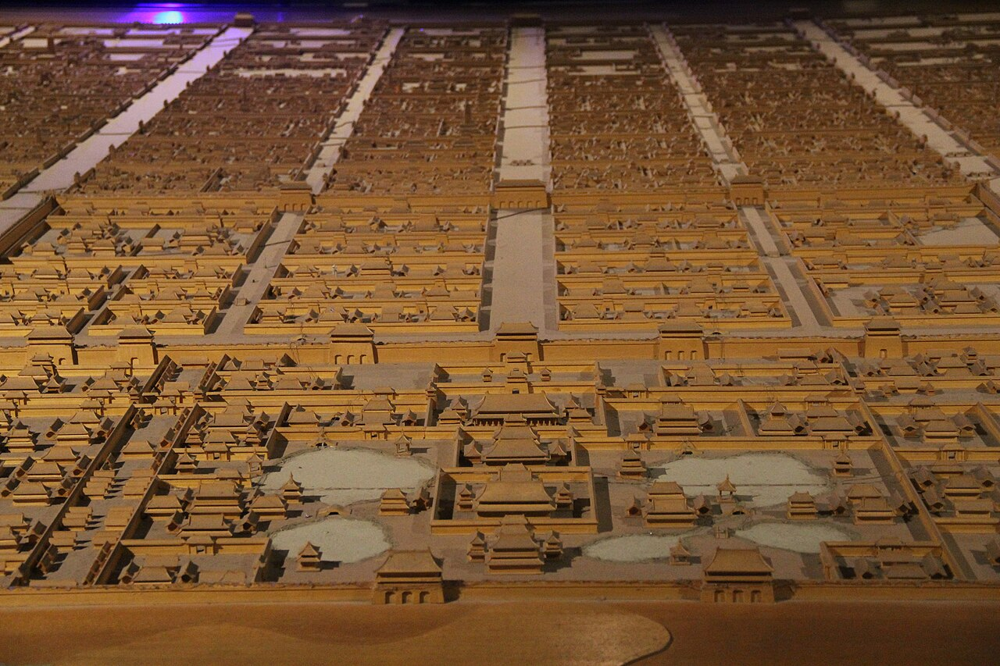
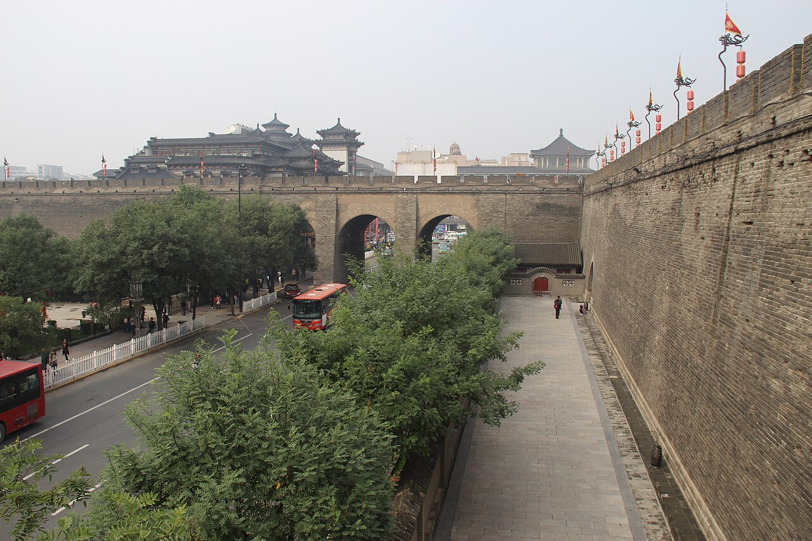
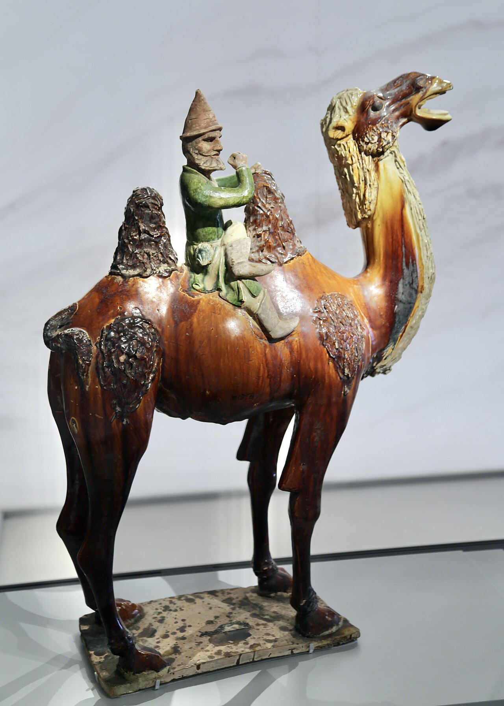
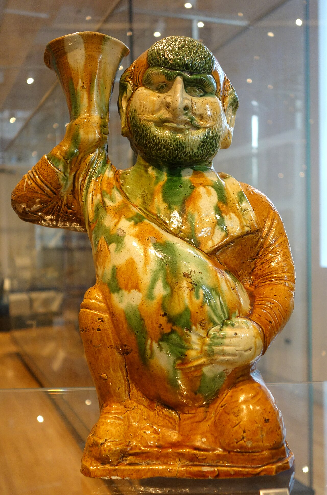
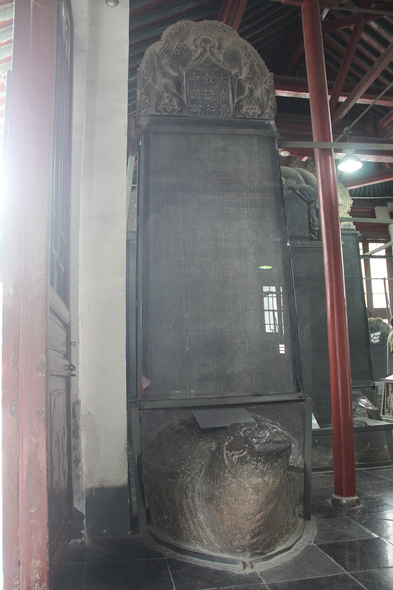
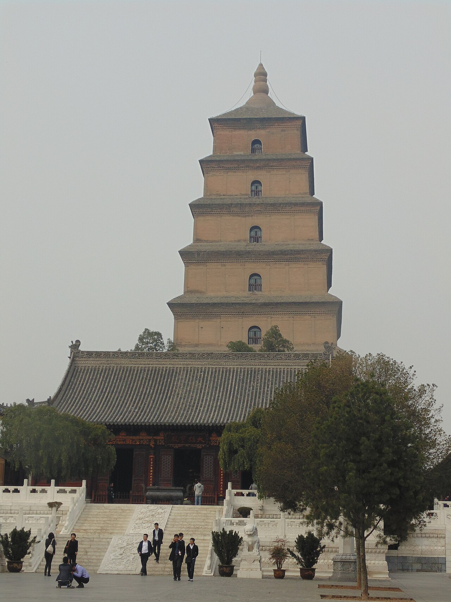
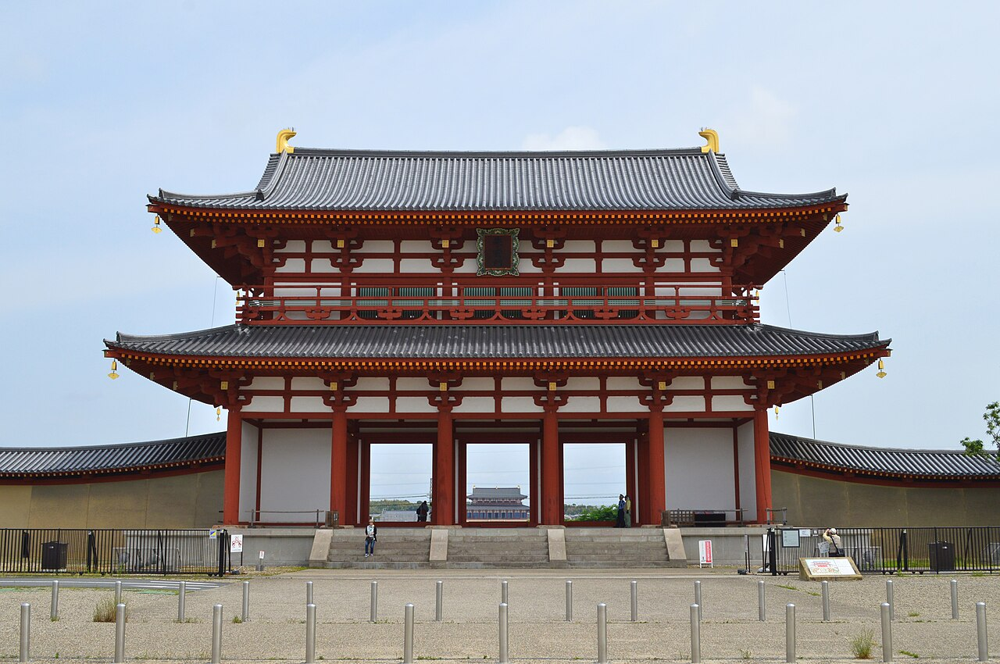
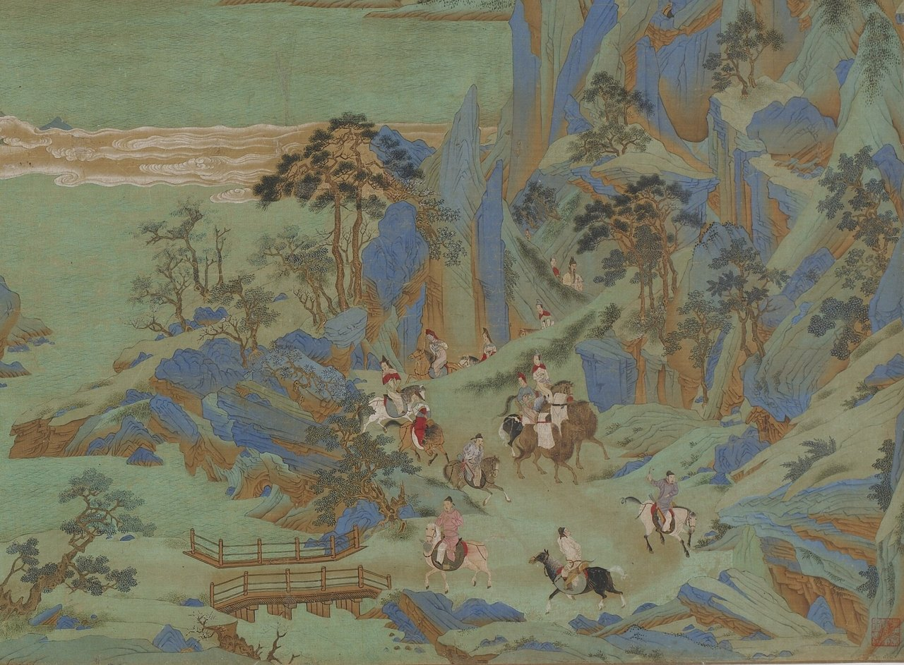

唐の都・長安（いまの中国の西安）、752年。日本から渡って35年になる阿倍仲麻呂は、皇帝の玄宗から、日本の使いの世話を命じられました。仲麻呂は唐の朝廷に仕える役人になり、詩人の李白や王維とも親しく付き合っていたといいます。
そのころの長安には、仲麻呂のように外から来た人が大勢いました。中央アジアの商人、国を失ったペルシアの王族、西アジアから来たキリスト教の僧。町の人口は、およそ100万人ともいわれます。唐の長安は、なぜこれほど多くの国の人が集まる都になったのでしょうか。

唐の都・長安には、中央アジアの商人や、国を失ったペルシアの王子、日本からの留学生までが暮らしていました。けれどもその町は、夜になると区画ごとに門を閉ざす、きっちり区切られた町でもありました。町の平面図と地図、西から来た人の焼き物で、その開かれ方をたどってみませんか。
前回は、7世紀に1つにまとまったアラブが、東ローマとササン朝ペルシアを破った話でした。ササン朝は651年に滅び、イスラム教を掲げる国は100年ほどで大西洋から中央アジアまで広がります。750年に王朝がアッバース朝に代わった翌年の751年7月、その軍は、中央アジアのタラス川で、唐の軍を破りました。
唐の都・長安（いまの中国の西安）、752年。日本から渡って35年になる阿倍仲麻呂は、皇帝の玄宗から、日本の使いの世話を命じられました。仲麻呂は唐の朝廷に仕える役人になり、詩人の李白や王維とも親しく付き合っていたといいます。
そのころの長安には、仲麻呂のように外から来た人が大勢いました。中央アジアの商人、国を失ったペルシアの王族、西アジアから来たキリスト教の僧。町の人口は、およそ100万人ともいわれます。唐の長安は、なぜこれほど多くの国の人が集まる都になったのでしょうか。
シルクロードの東の端にあり、外の人も信仰も受け入れたから。
西安は、いまの中国の陝西省にあります。第10話で見た漢の都も、ここにありました。唐の長安は、その古い町の南東に、前の王朝の隋が582年から造った新しい都を受け継いだものです。618年、唐を開いた李淵（高祖）が、その名を長安に改めました。
町は東西約9.7km、南北約8.6kmの長方形で、ぐるりと城壁に囲まれていました。中には碁盤の目のように道が通り、南の正門から北の宮殿へまっすぐ延びる朱雀大街は、幅が150mもありました。サッカー場の長さより、道の幅のほうが広かったことになります。
道で区切られた区画を坊（ぼう）といい、108あったとされます。坊は1つずつ壁で囲まれ、門がありました。夜になると門は閉じられ、坊の外へ出ることは禁じられます。夜の外出が許されたのは、正月の灯籠の祭り（元宵節）の3日間などに限られました。
商売の場所も決まっていました。朱雀大街をはさんで、西に西市、東に東市があり、どちらも壁で囲まれていました。正午に大きな太鼓が300回鳴ると門が開き、日暮れより前に、どらが300回鳴ると閉まります。西市には、ペルシア風の品を扱う店が並ぶ一角もあったといいます。
外から来た人も、決まった坊に住み、決まった時間に市で商いをする。人の出入りをきっちり見張れる町だったからこそ、多くの国の人を受け入れられたともいえます。
人口は、750年ごろの記録では「100万人の町」と呼ばれています。いまの研究でも、城壁の中だけで80万〜100万人ほどと推計されています。同じころの東ローマの都コンスタンティノープルや、アッバース朝のバグダードと並ぶ、当時の世界で最大級の都市で、世界最大だったともいわれます。

長安は、中国から西へ延びる交易の道、シルクロードの東の端にありました。唐は630年、北のモンゴル高原にいた遊牧民の国・東突厥を破ります。657年には西の突厥も従え、オアシスの町々をつなぐ道は、唐の軍に守られるようになりました。
東突厥を破ったとき、遊牧民の王たちは、唐の皇帝・太宗を「天可汗（てんかがん）」と呼びました。可汗は、遊牧民の君主の呼び名です。唐の皇帝は、中国の皇帝であると同時に、遊牧民の王たちの上に立つ王にもなりました。唐の皇室も、母方に北方の遊牧民・鮮卑の血を引く一族でした。
この道を行き来した商人の主役が、ソグド人です。いまのウズベキスタンのサマルカンドなどのオアシスの町を故郷とするイラン系の人々で、ソグド語は中央アジアで共通語のように使われていました。長安でも、漢人と並ぶ大きな集団だったとされます。
中国の町に住むソグド人には、薩宝（さっぽう）という役職のまとめ役が置かれました。唐の軍や役所で出世するソグド人も、少なくありませんでした。唐は、朝鮮半島の高句麗から来た将軍なども取り立てています。生まれた国にこだわらず、人を使う国でした。


前回の話で、ササン朝ペルシアが651年に滅びたことを見ました。唐の歴史書によれば、最後の王の息子ペーローズは唐に助けを求め、670年代の初めに長安へ来て、唐の将軍の位を与えられました。唐は、アラブの軍から逃れてきたササン朝の人々が、国の中に住むことも認めています。
信仰も、西からやって来ました。635年、シリア語を使うキリスト教の一派（中国では景教〈けいきょう〉と呼ばれた東方教会）の僧・阿羅本（あらほん）が長安に着き、太宗に布教を認められます。ペルシアのゾロアスター教の寺も建てられ、8世紀の後半には、ウイグルの後押しでマニ教の寺も建つようになりました。
781年には、景教が中国に伝わってから約150年の歩みを、漢字とシリア文字で刻んだ石碑が建てられます。唐の皇室は、道教の祖とされる老子を先祖と称していましたが、外から来た信仰も、この時代には締め出しませんでした。

日本が唐へ送った使いを、遣唐使といいます。630年に始まり、838年に出発したものが最後になりました。回数は数え方により12回から20回まで説があります。船には役人のほか、留学生や僧が乗りこみ、唐の法や政治のしくみ、仏教、医学などを学びました。
冒頭の阿倍仲麻呂は、717年に唐へ渡った留学生です。753年、ようやく帰国の船に乗りましたが、嵐で南のベトナムまで流されました。長安に戻ったあとは唐の役人を続け、いまのベトナムを治める役にもつきます。日本へは帰れないまま、770年に唐で亡くなりました。
長安は、仏教を学ぶ場所でもありました。唐の僧・玄奘は629年、国の外へ出ることを禁じる決まりを破ってインドへ旅立ち、645年に多くの経典を持ち帰ります。その経典を納めるため、652年に長安の寺に建てられたのが、大雁塔です。


804年に唐へ渡った日本の僧・空海は、長安の西明寺に住み、青龍寺の僧・恵果から密教（秘密の儀式や言葉を重んじる仏教）を授かりました。20年の予定だった留学を2年で切り上げて806年に帰国し、日本で真言宗を開きます。
国のつくり方も、長安から学びました。710年に都となった奈良の平城京は、長安にならって造られたとされます。北の中央に宮殿を置き、そこから南へ朱雀大路を通し、東西に市を設け、町を碁盤の目に区切りました。
ただし平城京の広さは、東西約4.3km（外京を除く）、南北約4.7kmで、長安の4分の1ほどです。人口は多いときで5万〜10万人とされます。そして平城京には、長安のように町をぐるりと囲む城壁がありませんでした。
長安がもっとも栄えたのは、8世紀の半ば、玄宗の時代です。玄宗の朝廷は、北の国境の守りに、外から来た将軍を重く用いました。その1人が安禄山です。ソグド人と突厥（トルコ系の遊牧民）の血を引くとされる武将で、玄宗と妃の楊貴妃に気に入られ、北の3つの軍をまかされていました。
755年12月、安禄山は反乱を起こし、756年7月には長安を落としました。玄宗は南西の四川へ逃れます。唐は、北の遊牧民の国ウイグルの助けを借りて757年に長安を取り戻しましたが、乱が終わったのは763年でした。安禄山と仲間の史思明の名から、安史の乱と呼ばれます。この乱を境に、唐は衰えていきました。

乱のあいだに、唐は西の地方から軍を引き揚げ、シルクロードの多くを、チベットの王国（吐蕃〈とばん〉）に押さえられました。
乱のあとは国の中でも、地方の軍の長たちが都の言うことを聞かなくなります。外の人を見る目も厳しくなりました。779年には、長安のウイグル人に、漢人と見分けがつくよう自分たちの民族の服を着ることが命じられ、漢人の女性との結婚も禁じられました。
845年、皇帝の武宗は、寺の財産を国のものにしようと、仏教の寺を次々に壊させ、26万人あまりの僧と尼を、税を納める普通の人に戻しました。会昌（かいしょう）の廃仏です。景教やゾロアスター教など、外から来た宗教も禁じられました。781年の景教の碑も、このころ土に埋められたと考えられています。
9世紀の終わりには反乱が広がり、881年には反乱軍を率いる黄巣が長安を占めます。904年、実力者の朱全忠は都を洛陽へ移し、長安の建物を壊して材木を運ばせました。907年、朱全忠は自ら皇帝になり、唐は滅びます。長安が中国の都に戻ることは、二度とありませんでした。
ふり返ると、長安が国際都市になれたのは、シルクロードを押さえる広い国の都で、皇帝が遊牧民の王を兼ね、外から来た人と信仰を受け入れたからでした。その受け入れは、坊の壁と門で人々をきっちり治めるしくみの上に成り立っていました。そして外とのつながりが細ると、都の開かれ方も失われていったのです。
742年の記録にある、長安の町とその周りの地方（京兆府）を合わせた人口城壁の中だけなら80万〜100万人ほどと推計されます
唐の記録に残る、長安にあった外国から来た宗教の寺の数仏教の寺は111、道教の寺は41
845年に普通の人に戻された、景教とゾロアスター教の僧の人数皇帝の命令の文では「3,000人あまり」。唐全体での数
空海が長安で、インドの古い言葉サンスクリット語を習った先生がいます。般若という僧です。いまのアフガニスタンの首都カブールの近くに生まれ、インドの大寺院ナーランダーで学んでから、唐へやって来た人でした。
786年、般若は、ある仏教の経典を、イラン系の言葉（ソグド語かバクトリア語）から漢文に訳そうとします。手伝ったのは景浄という僧でした。781年に建てられた景教の碑の文を書いた、キリスト教の僧です。景浄はペルシア語と漢文ができたとされます。
翌787年、この訳は、仏教とキリスト教の考えが混ざっているとして、皇帝に退けられたといいます。それから17年後、その般若のもとに、日本から空海がやって来ました。インド、ペルシア、ソグド、中国、そして日本が、長安の1人の僧のまわりでつながっていたのです。
お寺で「弘法大師」（空海のこと）の名を見かけたら、その先生のすぐそばに、キリスト教の僧がいた長安の町を思い出してみてください。
長安が栄えていたころ、西のローマ帝国が消えたあとの西ヨーロッパでは、ゲルマン人の王たちが国を治めていました。そのそばで力を伸ばしていたのが、ローマの司教（教皇）を頂く教会です。中世ヨーロッパでは、なぜ王より教会が強かったのでしょうか。